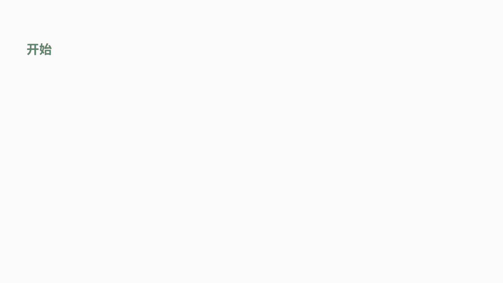

- 00 数据结构与算法，应该这样学！.md.html
- 01 复杂度：如何衡量程序运行的效率？.md.html
- 02 数据结构：将“昂贵”的时间复杂度转换成“廉价”的空间复杂度.md.html
- 03 增删查：掌握数据处理的基本操作,以不变应万变.md.html
- 04 如何完成线性表结构下的增删查？.md.html
- 05 栈：后进先出的线性表，如何实现增删查？.md.html
- 06 队列：先进先出的线性表，如何实现增删查？.md.html
- 07 数组：如何实现基于索引的查找？.md.html
- 08 字符串：如何正确回答面试中高频考察的字符串匹配算法？.md.html
- 09 树和二叉树：分支关系与层次结构下，如何有效实现增删查？.md.html
- 10 哈希表：如何利用好高效率查找的“利器”？.md.html
- 11 递归：如何利用递归求解汉诺塔问题？.md.html
- 12 分治：如何利用分治法完成数据查找？.md.html
- 13 排序：经典排序算法原理解析与优劣对比.md.html
- 14 动态规划：如何通过最优子结构，完成复杂问题求解？.md.html
- 15 定位问题才能更好地解决问题：开发前的复杂度分析与技术选型.md.html
- 16 真题案例（一）：算法思维训练.md.html
- 17 真题案例（二）：数据结构训练.md.html
- 18 真题案例（三）：力扣真题训练.md.html
- 19 真题案例（四）：大厂真题实战演练.md.html
- 20 代码之外，技术面试中你应该具备哪些软素质？.md.html
- 21 面试中如何建立全局观，快速完成优质的手写代码？.md.html
- 加餐 课后练习题详解.md.html
13 排序：经典排序算法原理解析与优劣对比
前面课时中，我们学习了分治法的思想，以及二分查找的实现方法。我们讲到，二分查找要求原数组必须有序。其实，由无序到有序，这是算法领域最常见的一类问题，即排序问题。本课时，我们就来学习 4 种常见的排序算法，包括冒泡排序、插入排序、归并排序以及快速排序。此外，我们还会对这 4 种排序算法的优劣势进行详细地对比分析。
什么是排序问题
排序，就是让一组无序数据变成有序的过程。 一般默认这里的有序都是从小到大的排列顺序。下面我们先来讲讲，如何判断不同的排序算法的优劣。
衡量一个排序算法的优劣，我们主要会从以下 3 个角度进行分析：
1．时间复杂度，具体包括，最好时间复杂度、最坏时间复杂度以及平均时间复杂度。
2．空间复杂度，如果空间复杂度为 1，也叫作原地排序。
3．稳定性，排序的稳定性是指相等的数据对象，在排序之后，顺序是否能保证不变。
常见的排序算法及其思想
接下来，我们就开始详细地介绍一些经典的排序算法。
冒泡排序
1、冒泡排序的原理
从第一个数据开始，依次比较相邻元素的大小。如果前者大于后者，则进行交换操作，把大的元素往后交换。通过多轮迭代，直到没有交换操作为止。 冒泡排序就像是在一个水池中处理数据一样，每次会把最大的那个数据传递到最后。
2、冒泡排序的性能
冒泡排序最好时间复杂度是 O(n)，也就是当输入数组刚好是顺序的时候，只需要挨个比较一遍就行了，不需要做交换操作，所以时间复杂度为 O(n)。
冒泡排序最坏时间复杂度会比较惨，是 O(n*n)。也就是说当数组刚好是完全逆序的时候，每轮排序都需要挨个比较 n 次，并且重复 n 次，所以时间复杂度为 O(n*n)。
很显然，当输入数组杂乱无章时，它的平均时间复杂度也是 O(n*n)。
冒泡排序不需要额外的空间，所以空间复杂度是 O(1)。冒泡排序过程中，当元素相同时不做交换，所以冒泡排序是稳定的排序算法。代码如下：
public static void main(String[] args) {
int[] arr = { 1, 0, 3, 4, 5, -6, 7, 8, 9, 10 };
System.out.println("原始数据: " + Arrays.toString(arr));
for (int i = 1; i < arr.length; i++) {
for (int j = 0; j < arr.length - i; j++) {
if (arr[j] > arr[j + 1]) {
int temp = arr[j];
arr[j] = arr[j + 1];
arr[j + 1] = temp;
}
}
}
System.out.println("冒泡排序: " + Arrays.toString(arr));
}
插入排序
1、插入排序的原理
选取未排序的元素，插入到已排序区间的合适位置，直到未排序区间为空。插入排序顾名思义，就是从左到右维护一个已经排好序的序列。直到所有的待排数据全都完成插入的动作。

2、插入排序的性能
插入排序最好时间复杂度是 O(n)，即当数组刚好是完全顺序时，每次只用比较一次就能找到正确的位置。这个过程重复 n 次，就可以清空未排序区间。
插入排序最坏时间复杂度则需要 O(n*n)。即当数组刚好是完全逆序时，每次都要比较 n 次才能找到正确位置。这个过程重复 n 次，就可以清空未排序区间，所以最坏时间复杂度为 O(n*n)。
插入排序的平均时间复杂度是 O(n*n)。这是因为往数组中插入一个元素的平均时间复杂度为 O(n)，而插入排序可以理解为重复 n 次的数组插入操作，所以平均时间复杂度为 O(n*n)。
插入排序不需要开辟额外的空间，所以空间复杂度是 O(1)。
根据上面的例子可以发现，插入排序是稳定的排序算法。代码如下：
public static void main(String[] args) {
int[] arr = { 2, 3, 5, 1, 23, 6, 78, 34 };
System.out.println("原始数据: " + Arrays.toString(arr));
for (int i = 1; i < arr.length; i++) {
int temp = arr[i];
int j = i - 1;
for (; j >= 0; j--) {
if (arr[j] > temp) {
arr[j + 1] = arr[j];
} else {
break;
}
}
arr[j + 1] = temp;
}
System.out.println("插入排序: " + Arrays.toString(arr));
}
小结：插入排序和冒泡排序算法的异同点
接下来我们来比较一下上面这两种排序算法的异同点：
相同点
- 插入排序和冒泡排序的平均时间复杂度都是 O(n*n)，且都是稳定的排序算法，都属于原地排序。
差异点
- 冒泡排序每轮的交换操作是动态的，所以需要三个赋值操作才能完成；
- 而插入排序每轮的交换动作会固定待插入的数据，因此只需要一步赋值操作。
以上两种排序算法都比较简单，通过这两种算法可以帮助我们对排序的思想建立基本的了解，接下来再介绍一些时间复杂度更低的排序算法，它们的时间复杂度都可以达到 O(nlogn)。
归并排序
1、归并排序的原理
归并排序的原理其实就是我们上一课时讲的分治法。它首先将数组不断地二分，直到最后每个部分只包含 1 个数据。然后再对每个部分分别进行排序，最后将排序好的相邻的两部分合并在一起，这样整个数组就有序了。
代码如下：
public static void main(String[] args) {
int[] arr = { 49, 38, 65, 97, 76, 13, 27, 50 };
int[] tmp = new int[arr.length];
System.out.println("原始数据: " + Arrays.toString(arr));
customMergeSort(arr, tmp, 0, arr.length - 1);
System.out.println("归并排序: " + Arrays.toString(arr));
}
public static void customMergeSort(int[] a, int[] tmp, int start, int end) {
if (start < end) {
int mid = (start + end) / 2;
// 对左侧子序列进行递归排序
customMergeSort(a, tmp, start, mid);
// 对右侧子序列进行递归排序
customMergeSort(a, tmp,mid + 1, end);
// 合并
customDoubleMerge(a, tmp, start, mid, end);
}
}
public static void customDoubleMerge(int[] a, int[] tmp, int left, int mid, int right) {
int p1 = left, p2 = mid + 1, k = left;
while (p1 <= mid && p2 <= right) {
if (a[p1] <= a[p2])
tmp[k++] = a[p1++];
else
tmp[k++] = a[p2++];
}
while (p1 <= mid)
tmp[k++] = a[p1++];
while (p2 <= right)
tmp[k++] = a[p2++];
// 复制回原素组
for (int i = left; i <= right; i++)
a[i] = tmp[i];
2、归并排序的性能
对于归并排序，它采用了二分的迭代方式，复杂度是 logn。
每次的迭代，需要对两个有序数组进行合并，这样的动作在 O(n) 的时间复杂度下就可以完成。因此，**归并排序的复杂度就是二者的乘积 O(nlogn)。**同时，它的执行频次与输入序列无关，因此，归并排序最好、最坏、平均时间复杂度都是 O(nlogn)。
空间复杂度方面，由于每次合并的操作都需要开辟基于数组的临时内存空间，所以空间复杂度为 O(n)。归并排序合并的时候，相同元素的前后顺序不变，所以归并是稳定的排序算法。
快速排序
1、快速排序法的原理
快速排序法的原理也是分治法。它的每轮迭代，会选取数组中任意一个数据作为分区点，将小于它的元素放在它的左侧，大于它的放在它的右侧。再利用分治思想，继续分别对左右两侧进行同样的操作，直至每个区间缩小为 1，则完成排序。

代码参考：
public static void main(String[] args) {
int[] arr = { 6, 1, 2, 7, 9, 11, 4, 5, 10, 8 };
System.out.println("原始数据: " + Arrays.toString(arr));
customQuickSort(arr, 0, arr.length - 1);
System.out.println("快速排序: " + Arrays.toString(arr));
}
public void customQuickSort(int[] arr, int low, int high) {
int i, j, temp, t;
if (low >= high) {
return;
}
i = low;
j = high;
temp = arr[low];
while (i < j) {
// 先看右边，依次往左递减
while (temp <= arr[j] && i < j) {
j--;
}
// 再看左边，依次往右递增
while (temp >= arr[i] && i < j) {
i++;
}
t = arr[j];
arr[j] = arr[i];
arr[i] = t;
}
arr[low] = arr[i];
arr[i] = temp;
// 递归调用左半数组
customQuickSort(arr, low, j - 1);
// 递归调用右半数组
customQuickSort(arr, j + 1, high);
}
2、快速排序法的性能
在快排的最好时间的复杂度下，如果每次选取分区点时，都能选中中位数，把数组等分成两个，那么此时的时间复杂度和归并一样，都是 O(n*logn)。
而在最坏的时间复杂度下，也就是如果每次分区都选中了最小值或最大值，得到不均等的两组。那么就需要 n 次的分区操作，每次分区平均扫描 n / 2 个元素，此时时间复杂度就退化为 O(n*n) 了。
快速排序法在大部分情况下，统计上是很难选到极端情况的。因此它平均的时间复杂度是 O(n*logn)。
快速排序法的空间方面，使用了交换法，因此空间复杂度为 O(1)。
很显然，快速排序的分区过程涉及交换操作，所以快排是不稳定的排序算法。
排序算法的性能分析
我们先思考一下排序算法性能的下限，也就是最差的情况。在前面的课程中，我们写过求数组最大值的代码，它的时间复杂度是 O(n)。对于 n 个元素的数组，只要重复执行 n 次最大值的查找就能完成排序。因此排序最暴力的方法，时间复杂度是 O(n*n)。这恰如冒泡排序和插入排序。
当我们利用算法思维去解决问题时，就会想到尝试分治法。此时，利用归并排序就能让时间复杂度降低到 O(nlogn)。然而，归并排序需要额外开辟临时空间。一方面是为了保证稳定性，另一方面则是在归并时，由于在数组中插入元素导致了数据挪移的问题。
为了规避因此而带来的时间损耗，此时我们采用快速排序。通过交换操作，可以解决插入元素导致的数据挪移问题，而且降低了不必要的空间开销。但是由于其动态二分的交换数据，导致了由此得出的排序结果并不稳定。
总结
本课时我们讲了4 种常见的排序算法，包括冒泡排序、插入排序、归并排序以及快速排序。这些经典算法没有绝对的好和坏，它们各有利弊。在工作过程中，需要你根据实际问题的情况来选择最优的排序算法。
如果对数据规模比较小的数据进行排序，可以选择时间复杂度为 O(n*n) 的排序算法。因为当数据规模小的时候，时间复杂度 O(nlogn) 和 O(n*n) 的区别很小，它们之间仅仅相差几十毫秒，因此对实际的性能影响并不大。
但对数据规模比较大的数据进行排序，就需要选择时间复杂度为 O(nlogn) 的排序算法了。
- 归并排序的空间复杂度为 O(n)，也就意味着当排序 100M 的数据，就需要 200M 的空间，所以对空间资源消耗会很多。
- 快速排序在平均时间复杂度为 O(nlogn)，但是如果分区点选择不好的话，最坏的时间复杂度也有可能逼近 O(n*n)。而且快速排序不具备稳定性，这也需要看你所面对的问题是否有稳定性的需求。